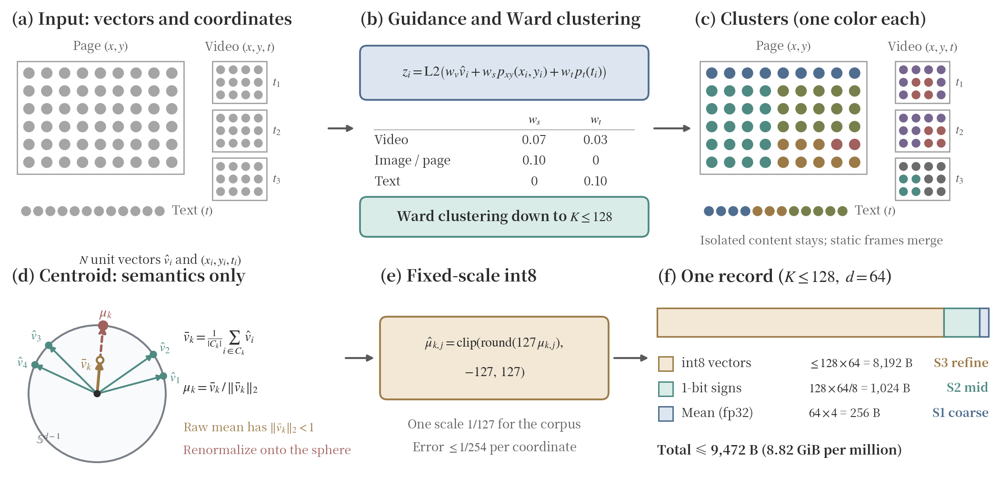
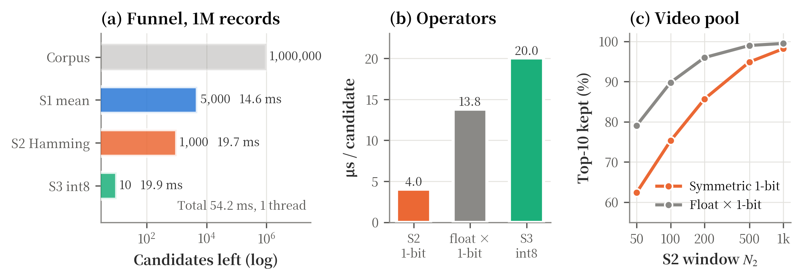

OmniEVIE-4B — 让检索返回证据的位置，而非只返回文档ID

表示、压缩与位置保留
Qwen3.5-4B骨干、实际4.54B参数，周期性full-attention改双向；配置保留linear/full混合层，因此不是把所有层机械替换成全注意力。Prefix-MRL共用一个投影头，可取64/128/256/512/1024/2048维前缀。ST-HAC按时空约束做Ward层次聚类，把文档/视频token合并为至多128个簇，球面重归一化后定标int8；簇位置对应页面框或视频时间，late interaction的argmax可回溯到证据。学习到的query saliency gate让有信息的query token权重更高，另有噪声底修正，不能把所有token匹配等价相加。
| 配置 | 官方索引占用 | 含义与边界 |
|---|---|---|
| Full d2048 | 完整序列多向量 | 精度上界，非压缩索引内存 |
| K128×64D int8 | ≤9472 bytes/record，8.82GiB/百万 | 记录布局上界含附加结构；ViDoRe实测表7.87GiB/百万页与此口径不同 |
| K32×64D int8 | 2.15GiB/百万 | 更省空间，nDCG下降 |
| 模态 | 文本、图像、视觉文档、原生视频 | 不含音频；Agent/Tool/GUI/Memory为检索任务类别 |
索引源码的实际查询顺序
ThreeStageIndex.search先按modality或显式candidate限制候选池。第一阶段归一化均值向量点积取N1=5000；第二阶段对符号码做Hamming MaxSim，取N2=1000；第三阶段在int8簇向量上计算每个query token的最佳相似度，再加saliency权重。源码的噪声修正为 \(b(s)=s+2.5\max(s-0.38,0)\)，最终求 \(\sum_i w_i b(\max_j q_i^Td_j)\)。这是当前实现的读出，不是凭空推导训练loss。
源码先过滤零向量、检查每文档1–128向量、拒绝重复doc_id；分块重排避免一次展开全部候选。保存文件包含ids、模态、均值、codes与lengths，load使用weights_only。query_gate另存权重；仅部署backbone会漏掉完整检索契约。该源码本次仅阅读，没有执行。
精度、定位与效率
| 模型 / 配置 | MMEB-V3 190任务 | Text | Agent | MMEB-V2 78任务 | ViDoReV3 nDCG@10 |
|---|---|---|---|---|---|
| OmniEVIE Full d2048 | 60.68 | 52.97 | 54.14 | 78.56 | 64.34 |
| OmniEVIE K128 int8 32帧 | 60.06 | 51.77 | 54.03 | 77.96 | 62.96 |
| OmniEVIE K128 int8 8帧 | 59.76 | 51.77 | 54.03 | 77.24 | 62.96 |
| OmniEVIE K32 int8 | 未列 | 未列 | 未列 | 未列 | 61.16 |
| WeMM-Embedding9B | 59.33 | 48.76 | 50.10 | 80.58 | 未列 |
| Qwen3VL-Embedding8B | 53.50 | 42.50 | 38.40 | 77.82 | 59.00 |
Full的GUI42.00、Memory37.60，低于WeMM9B的43.33/38.65；MMEB-V2图像/视频也非最强。官方截图称非音频模型第1，但全190任务总榜为第2，压缩第4；必须保留排除音频条件。Full→K128在MMEB-V3下降0.62点，在ViDoRe下降1.38点，K32再降1.80点。
| 索引查询单线程CPU ms | 10万 | 100万 | 500万 |
|---|---|---|---|
| 完整int8 MaxSim | 1657 | 12781 | 63892 |
| 精确单向量d2048 | 34.6 | 331.0 | 1666 |
| 三阶段N1=5000,N2=1000 | 41.9 | 54.2 | 120.2 |
100万下三阶段14.6+19.7+19.9=54.2ms，约236倍于该完整int8基线；10万下仍慢于单向量d2048，不能声称所有规模全面更快。QVHighlights val1083query：peak-in-segment78.0%、span intersection94.3%、平均span占18%，这三者量尺不同，94.3%不是定位IoU或答案正确率。
对Agent记忆的判断
目前没有独立复现这组CPU数字，也未验证新业务数据、索引更新代价、端到端并发和不同机器峰值内存。报告PDF未读不冒充完整论文精读。
官方来源与关联资料
📊 中文Poster：中文Poster
官方原图与机制对照

